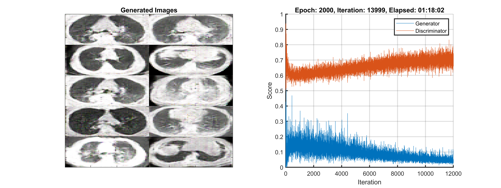
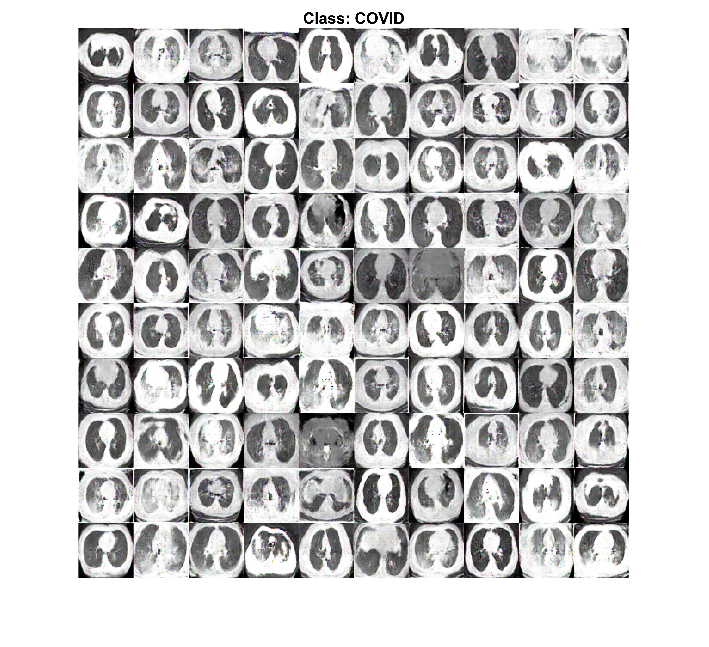
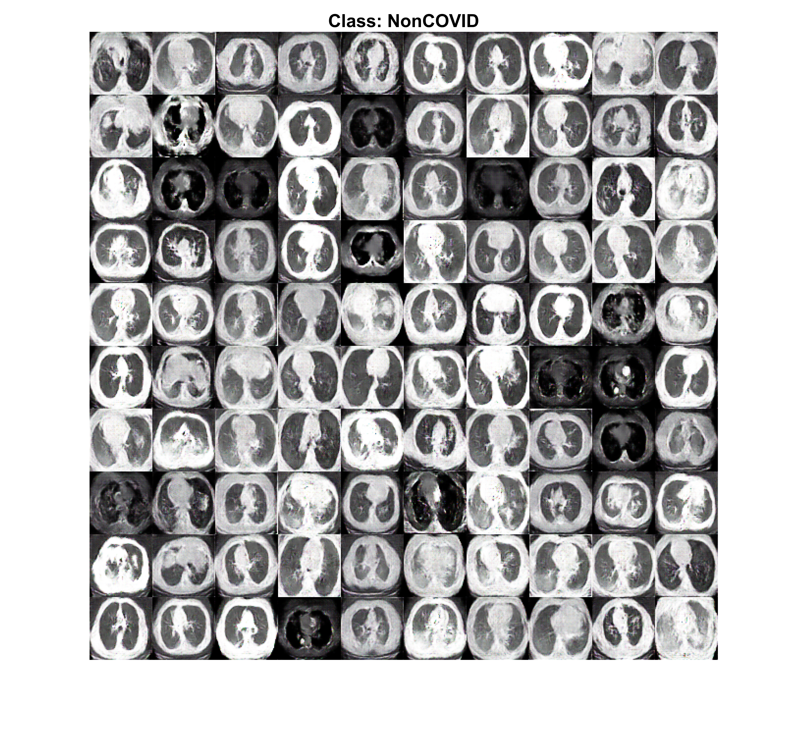
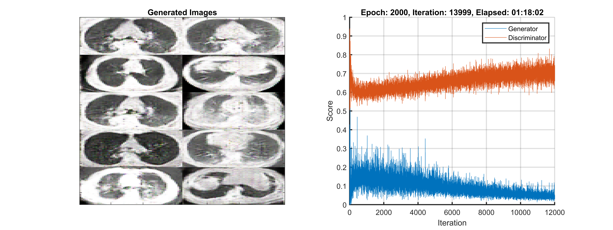
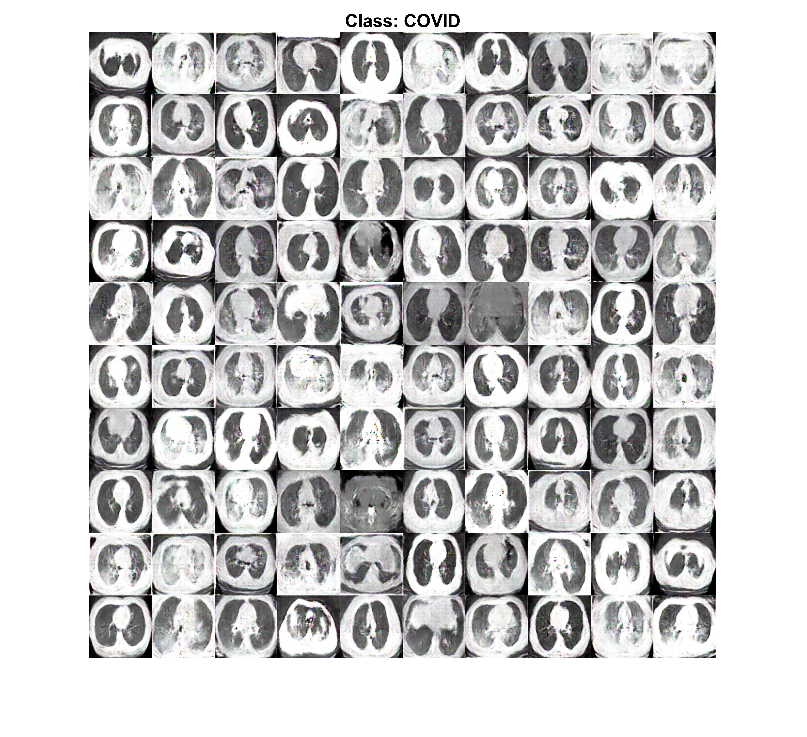
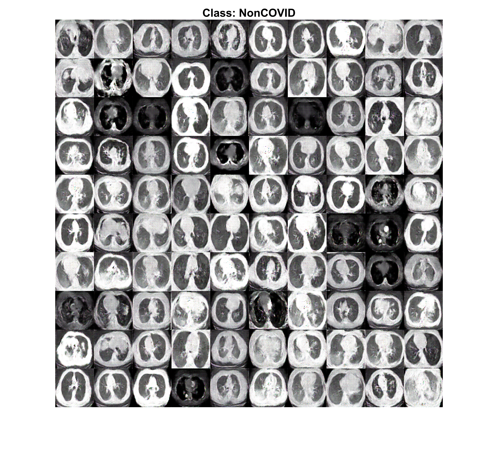

A Hybrid Deep Transfer Learning Model with Machine Learning Methods for Face Mask Detection in the Era of the COVID-19 Pandemic
Abstract
The coronavirus COVID-19 pandemic is causing a global health crisis. One of the effective protection methods is wearing a face mask in public areas according to the World Health Organization (WHO). In this paper, a hybrid model using deep and classical machine learning for face mask detection will be presented. The proposed model consists of two components. The first component is designed for feature extraction using Resnet50. While the second component is designed for the classification process of face masks using decision trees, Support Vector Machine (SVM), and ensemble algorithm. Three face masked datasets have been selected for investigation. The Three datasets are the Real-World Masked Face Dataset (RMFD), the Simulated Masked Face Dataset (SMFD), and the Labeled Faces in the Wild (LFW). The SVM classifier achieved 99.64 % testing accuracy in RMFD. In SMFD, it achieved 99.49%, while in LFW, it achieved 100% testing accuracy


 





Dataset
Download dataset from Kaggle
Reference
Mohamed Loey, Gunasekaran Manogaran, Mohamed Hamed N. Taha, Nour Eldeen M. Khalifa, A hybrid deep transfer learning model with machine learning methods for face mask detection in the era of the COVID-19 pandemic, Measurement, Volume 167, 2021, 108288, ISSN 0263-2241, https://doi.org/10.1016/j.measurement.2020.108288